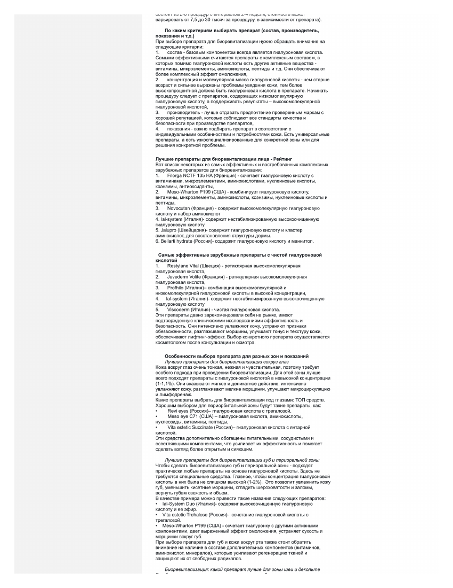
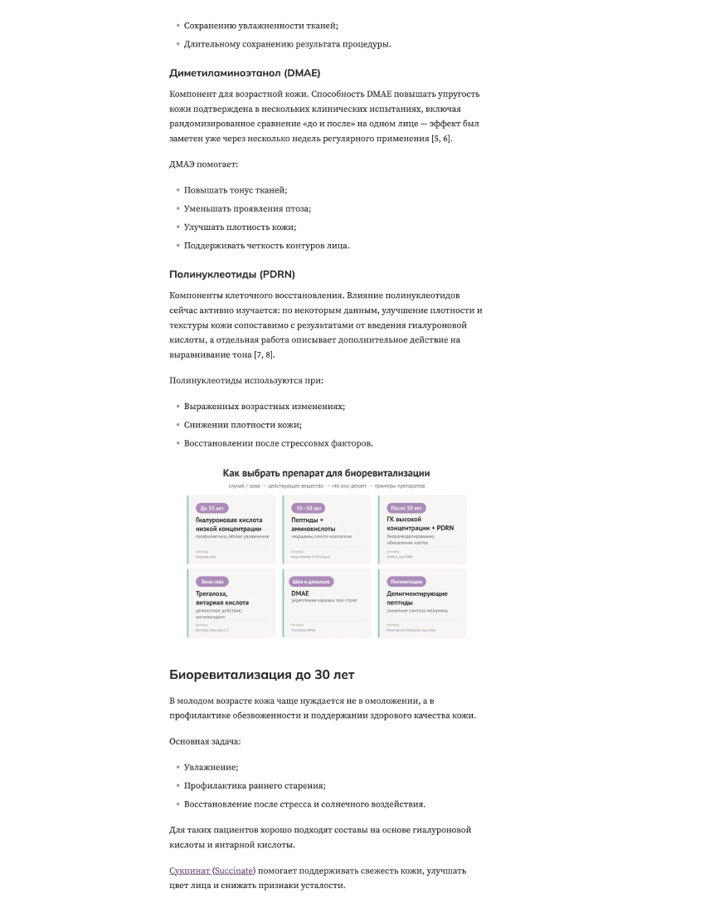

case study
Mesoreal is a B2B cosmetology distributor. We rewrote how its blog reads and how its team publishes — content structure, front-end framework, and the CMS behind it.
Live on mesoreal.ruOverview
Mesoreal's blog carried real expertise — articles written by the brand's own cosmetologist — but the format buried it. Long unbroken paragraphs, no way to jump to a relevant section, no sourcing behind the claims, and an editing workflow that forced every article through a single freeform HTML box. We took on both sides of the problem: how an article reads, and how it gets published.
Before / after
Same article, same author. The old version is a single wall of text with a manufacturer ranking and no citations. The new version opens with a table of contents, a disclaimer, and reorganizes the advice around how a reader actually decides — by age, by zone, by ingredient — backed by numbered sources.
Before

After

Content & visual redesign
Navigable structure
Added a table-of-contents sidebar and real heading hierarchy, so a reader can jump straight to the section that answers their question instead of scrolling a single block of text.
Reasoning over ranking
Replaced the generic "best products" list with advice organized by the variables that actually drive a recommendation — patient age, treatment zone, active ingredient — plus a custom visual summary card for quick reference.
Cited sources
Claims about ingredients and results are now backed by numbered references linking to the actual studies, instead of stated as unsupported fact.
Scoped typography
Gave the blog its own type and color system inside .post-content, without touching the site-wide UI everywhere else.
Admin & CMS
The visual redesign only holds up if the editing team can actually produce it article after article. So we rebuilt the publishing pipeline behind the blog alongside the front end.
Bootstrap 3 → 5
Migrated the site's front-end framework, updating deprecated markup along the way — the video embed block and the news carousel's data attributes both needed rework to match Bootstrap 5's conventions.
Structured content model, not a text box
Replaced the Summernote WYSIWYG editor with a ContentBlock model — text, image, video, and callout blocks, with rich text (including tables) authored in CKEditor5. Editors now compose posts from reusable blocks instead of pasting raw HTML, which cuts down on formatting bugs and keeps the content structured enough to reuse later.
CDN for media
Connected blog media to a CDN, provisioned separately from object storage, for faster asset delivery without changing how editors upload images.
Google Docs → draft, automatically
Built a script that pulls an article straight from a Google Doc and creates a draft post in the admin panel — removing the manual copy-paste step, and the formatting loss that came with it, between the writer's document and the CMS.
Details
Contact